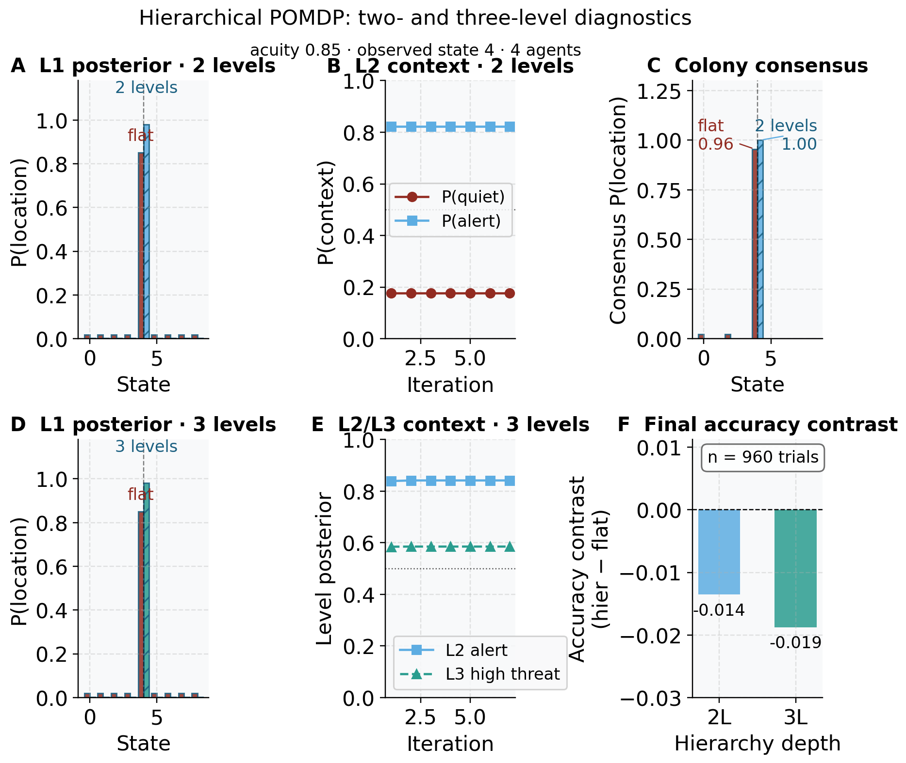

Hierarchical POMDP: federated belief sharing across levels
The flat sentinel world couples all agents at a single latent level —
the creature’s location. A natural extension is a 2-level
hierarchical POMDP in which location inference (Level 1, L1; 9
states) is coupled to a global context variable (Level 2, L2; 2
states: quiet / alert) that modulates the L1
prior. In the alert context the creature is expected near
the den (center cell); in the quiet context the prior is
uniform. Each sentinel runs alternating L1/L2 minimization
(fedference.pomdp.hierarchical_infer) to infer both its
location belief and the current context belief, then the colony
federates both levels via a log-linear pool.
We compare two conditions over 960 seeded trials with 4 agents at sensor acuity 0.85:
- Flat — agents ignore the hierarchy and infer location under a uniform prior;
- Hierarchical — agents run 4 alternating-minimization iterations to couple L1 and L2 beliefs before federating.
The measured location accuracies are 0.982 (flat) and 0.969 (hierarchical), a gap of -0.014. Across 128 independent seeds the hierarchical location accuracy is 0.974 (SD 0.005; 95 % CI 0.973–0.975) versus flat 0.982 (95 % CI 0.981–0.982), a mean accuracy gap of -0.008 (95 % CI -0.009–-0.007; Wilcoxon signed-rank \(p = 0.0000\), effect size \(r = 0.940\), large). On location the gap is small but statistically reliable in the negative direction — the paired test rejects at \(\alpha = 0.05\) and the gap’s confidence interval (-0.009–-0.007) excludes zero on the negative side — so the hierarchy does not improve location accuracy in this regime; if anything it pays a small, consistent location cost for carrying the extra latent level. Its added value is that it also infers the context latent, at accuracy 0.763 against a two-state chance baseline of \(0.5\). Two-level federation therefore runs L1/L2 inference end-to-end and resolves context above chance while paying a small, reliable location cost relative to the flat baseline (Figure 25). Context beliefs across the alternating-minimization iterations are shown in the top-middle panel: P(alert) sits above the two-state chance line and is stable from the first iteration onward when the observed location is the center cell — the center-cell observation pins the context posterior immediately, because the alert context-conditioned L1 prior is peaked there. The full construction and parameter sweep are detailed in the supplement (Section 13.10). For the effect of acuity and colony size on these results, see Section 13.13.
